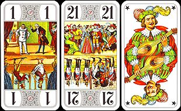
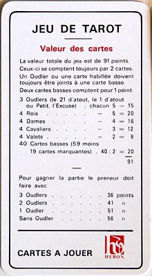

Règle du jeu de Tarot - (Wikipédia)
Le tarot ou tarot français est un jeu de cartes se pratiquant généralement à quatre joueurs, mais il existe des variantes pour trois et cinq joueurs.
Histoire et origine
Les jeux de cartes sont apparus en Europe à la fin du XIVe siècle[1], elles auraient pu être introduites d'Italie ou de Catalogne[2].
Les plus anciens tarots connus aujourd'hui ont été faits pour la famille Visconti de Milan dans la première moitié du XVe siècle [3].
Les carte da trionfi ou naipe a trionfi sont mentionnées pour la première fois au milieu du XVe siècle en Italie du Nord. Le mot italien tarocchi et le mot français tarot sont mentionnés pour la première fois au début du XVIe siècle [4].
Le mot français tarot vient probablement de l'italien tarocco (au pluriel tarocchi). En français, le mot tarot a donné au XVIIe siècle les mots taroter et tarotage[5].
C'est au tout début du XVIe siècle que le jeu de tarot arrive en France[6]. Cité en 1534 par Rabelais dans Gargantua[7] et à la mode jusqu'en 1650[2], époque à laquelle il était joué à trois suivant la règle de 1655[2], il semble qu'au XVIIIe siècle en France il ne soit guère plus joué qu'en Provence[8]. Remis au goût du jour à la fin du XVIIIe siècle et au XIXe siècle — époque à laquelle les tarots anciens appelés depuis les années 1930 « Tarots de Marseille » étaient désignés comme tarots italiens — il sera largement adopté au XXe siècle vers 1950 puis verra établie la Fédération française de tarot en 1973[9] qui consacrera comme officielle la règle moderne à quatre joueurs, et joué quasi exclusivement avec les cartes modernisées à enseignes françaises.
Au XVIIIe siècle, les cartes du jeu de tarot sont associées à la pratique de la cartomancie et utilisées depuis pour le tarot divinatoire. Les cartes anciennes à enseignes italiennes sont en général privilégiées pour cette utilisation.
Les cartes

Un atout
Un jeu de tarot comporte 78 cartes à jouer :
- Cinquante-six cartes réparties en quatorze cartes des quatre enseignes traditionnelles : pique, cœur, carreau et trèfle. Dans chaque enseigne un cavalier s'intercalant entre la dame et le valet.
- Vingt et une cartes portant un numéro : ce sont les atouts qui ont priorité sur les couleurs. Le numéro indique la force de chaque atout, du plus fort, le 21, au plus faible, le 1 (appelé « petit »).
- L'« excuse », une carte marquée d'une étoile et représentant un joueur de mandoline. Il s'agit d'une sorte de joker.
Le principe du jeu
Introduction
Le tarot se joue à quatre joueurs. Il peut cependant se jouer à trois joueurs avec quelques variantes dans les règles. Il existe aussi une variante, plus ludique, à cinq joueurs. Dans ce cas, le jeu se répartit entre deux équipes, le preneur et un appelé d'une part et les défenseurs d'autre part.
Le tarot est à la fois un jeu individuel et un jeu d'équipe. En effet, au cours de la partie, l'un des joueurs, appelé le « preneur » ou le déclarant, est opposé aux trois autres, les « défenseurs », qui constituent une équipe (la défense). Mais cette association ne dure que le temps d'une donne.

Les trois bouts (ou oudlers) : le 1 d'atout (le petit), le 21 et l'excuse.
À l'issue des enchères, le preneur s'engage à atteindre un certain nombre de points en jouant seul contre ses trois adversaires. Le nombre de points minimal que le preneur doit obtenir pour remplir son contrat dépend du nombre d'oudlers qu'il compte dans ses levées à la fin de la partie :
- sans aucun bout, il faut 56 points ;
- avec un bout, il faut 51 points ;
- avec deux bouts, il faut 41 points ;
- avec trois bouts, il faut 36 points.
C'est pour cette raison que les trois bouts constituent les cartes les plus importantes du jeu, et le fait d'en posséder est un avantage considérable. Le 21, en tant que carte la plus forte, ne peut changer de camp car il est imprenable. L'excuse reste dans le même camp à condition qu'elle ne soit pas jouée dans la dernière levée (sauf en cas de grand chelem où elle permet de faire le dernier pli), faute de quoi elle change de camp. Le petit, lui, est vulnérable puisque tous les autres atouts le battent. C'est pourquoi cette carte est très convoitée par le camp qui ne la possède pas et qui souhaite la récupérer (ce qu'on appelle la « chasse au petit »).
La distribution
Avant la première distribution, on étale le jeu, face cachée, et chaque joueur tire une carte au hasard. La plus petite carte désigne le donneur. En cas d'égalité entre les deux plus faibles, on respecte l'ordre de priorité entre les couleurs : pique, cœur, carreau, trèfle. L'as de trèfle est donc la plus petite carte. Les atouts sont prioritaires, mais l'excuse ne compte pas : il faut retirer dans ce cas une nouvelle carte.
Le jeu doit être obligatoirement battu par le joueur en face du donneur. Le joueur à gauche du donneur doit couper en prenant ou en laissant obligatoirement plus de trois cartes.
Le donneur distribue les cartes trois par trois, dans le sens contraire des aiguilles d'une montre. Au cours de la distribution, le donneur constitue, carte par carte, un talon de six cartes appelé le « chien ». Il est interdit de mettre la première ou la dernière carte du paquet au chien.
En cas de fausse donne, le donneur redistribue, mais ne peut pas prendre à ce tour.
Une carte retournée par le donneur lors de la distribution entraîne une fausse donne, s'il s'agit d'une carte habillée ou d'un atout, le donneur redistribue et ne peut pas prendre.
Toute carte retournée par un défenseur lors de la distribution entraîne une nouvelle distribution par le même donneur. Une pénalité peut être donnée par l'arbitre au joueur ayant ramassé ses cartes avant la fin de la distribution.
Les joueurs ne relèvent leur jeu que lorsque la distribution est terminée. En cas de faute du donneur (fausse donne), chaque joueur rend son jeu sans le regarder ; on évite ainsi regrets et mauvaise humeur.
La distribution passe à tour de rôle dans le sens du jeu (sens inverse des aiguilles d'une montre : le donneur suivant est celui placé à droite du donneur actuel).
Les enchères
Une fois les cartes distribuées, chaque joueur prend connaissance de son jeu. L'usage veut qu'on ne classe ses cartes avant qu'une prise ait eu lieu car les cartes ne sont pas systématiquement battues entre chaque donne et le fait de les classer fausserait leur répartition. Cette règle n'est toutefois pas contraignante[10].
Le joueur placé à droite du donneur parle le premier. S'il dit « Je passe », la parole passe alors à son voisin de droite. Et ainsi de suite jusqu'au donneur.
Si les quatre joueurs passent, le voisin de droite du donneur procède à une nouvelle distribution. Mais si un joueur lance une enchère s'il estime que son jeu lui permet de jouer seul contre ses trois adversaires réunis, il dit alors « Je prends » ou « Prise », « Je garde », « Je garde sans le chien » ou « Je garde contre le chien ». Les autres joueurs, placés à sa droite peuvent éventuellement couvrir cette première enchère par une enchère supérieure. Chaque joueur ne peut parler qu'une seule fois.
Les enchères, par ordre croissant, sont :
- La prise, avec un jeu moyen qui ne laisse espérer qu'environ 50 % de chances de réussite et qui s'appuie souvent sur l'espoir de la découverte d'un très beau chien. Appelée aussi la petite, elle est en voie de disparition dans les tournois, au profit de la garde. Cette enchère est en revanche courante lors d'une partie à cinq, en plus de miser sur un bon chien on peut aussi miser sur le jeu de son coéquipier.
- La garde peut être une surenchère après la prise d'un adversaire. Mais elle est, le plus souvent, la première enchère, quand le preneur estime ses chances de réussite très supérieures à ses risques d'échec.
- La garde sans le chien, avec un très beau jeu, le preneur estime qu'il peut réaliser son contrat sans incorporer le chien à son jeu, donc sans effectuer d'« écart ». Mais les points du chien lui sont comptés à la fin de la donne et constituent pour lui une certaine réserve de sécurité. Naturellement, aucun joueur ne doit regarder le chien tant que la donne n'a pas été jouée.
- La garde contre le chien, avec un jeu exceptionnel, le preneur s'engage à réaliser son contrat sans l'aide du chien dont les points seront comptés avec ceux de la défense.
- Variante : Dans certaines contrées, la prise est remplacée par la G.A.E., cette enchère est considérée comme une garde en termes de points gagnés et au niveau de la gestion de l'écart, mais reste une enchère de plus faible niveau. Suite à une G.A.E proposée par un joueur, un autre peut surenchérir avec une garde.
Le chelem
Réussir le chelem, c'est remporter toutes les levées au cours d'une donne. Cette situation est extrêmement rare puisqu'il faut pour cela que le preneur ait un jeu exceptionnel.
Le chelem est annoncé en plus du contrat ; les points sont comptés en fonction du contrat demandé et une prime (ou une pénalité) supplémentaire sanctionne la réussite (ou l'échec) de ce chelem :
- chelem annoncé et réalisé : prime supplémentaire de 400 points ;
- chelem non annoncé mais réalisé : prime supplémentaire de 200 points ;
- chelem annoncé mais non réalisé : 200 points sont déduits du total.
En cas d'annonce du chelem, l'entame revient de droit au demandeur du chelem, quel que soit le donneur. En cas de chelem réussi, le demandeur doit obligatoirement faire tous ses plis et jouer l'excuse en dernier (s'il la possède). Ce faisant, il remporte également le dernier pli. En conséquence, le petit sera considéré au bout s'il est mené à l'avant-dernier pli. Un défenseur ne peut pas demander un chelem. Le preneur peut demander le chelem après avoir fait son écart.
Paradoxalement, il arrive que la défense inflige un chelem au déclarant. Dans ce cas, chaque défenseur reçoit, en plus de la marque normale, une prime de 200 points. Théoriquement, un chelem peut être demandé par un défenseur ! C'est alors lui qui attaque la donne.
Le chien et l'écart
Sur une prise ou une garde, lorsque les enchères sont terminées, le preneur retourne les six cartes du chien pour que chacun en prenne connaissance. Il les incorpore à son jeu puis « écarte » (son écart) six cartes qui restent secrètes pendant toute la partie et qui seront comptabilisées avec ses levées.
On ne peut écarter ni roi, ni bout ; on n'écarte des atouts que si cela se révèle indispensable et en les montrant à la défense.
Lorsqu'il a terminé son écart, le preneur dit « Jeu » et l'écart ne peut plus alors être modifié ni consulté.
- Sur une garde sans ou une garde contre, les cartes du chien restent faces cachées.
- Sur une garde sans, elles sont placées devant le preneur et seront comptabilisées avec ses levées.
- Sur une garde contre, elles sont placées devant le joueur situé en face du preneur et seront comptabilisées avec les levées de la défense.
La poignée (10, 13 ou 15 atouts)

Détail du 17 d'atout.
Un joueur possédant une poignée peut, s'il le désire, l'annoncer et présenter les atouts classés dans l'ordre décroissant, complète et en une seule fois, juste avant de jouer sa première carte.
- À la simple poignée (dix atouts) correspond une prime de 20 points.
- À la double poignée (treize atouts) correspond une prime de 30 points.
- À la triple poignée (quinze atouts) correspond une prime de 40 points.
Ces primes gardent la même valeur quel que soit le contrat. Attention, la prime appartient au camp vainqueur de la donne: si le preneur présente une simple poignée mais chute son contrat, c'est la défense qui récupère les 20 points. C'est pourquoi il n'est jamais obligatoire de présenter une poignée. En théorie il est possible qu'un défenseur et un attaquant à la fois présentent une poignée: les 40 points appartiennent alors au vainqueur de la donne[11].
Le joueur à qui il manque un atout peut compléter sa poignée avec l'Excuse. Si le joueur présente l'Excuse dans sa poignée, cela implique qu'il n'a plus d'autres atouts.
Lors d'une partie à 4 joueurs, le nombre d'atouts par partie est de 5 en moyenne sans prendre le chien, et 6,7 en prenant le chien. En prenant le chien (24 cartes), les probabilités d'avoir une poignée simple ou double sont respectivement de : 6,4 % (une chance sur 15,5 environ) et 0,56 % (une chance sur 177 environ). La probabilité d'avoir une poignée triple est de 0,0018 % : une chance sur 56300 environ. La probabilité pour un défenseur (sur 18 cartes) de n'avoir aucun atout/excuse est de 0,1 %. La probabilité que l'un des trois ait ce blanc est de 0,3 %.
Exemples
- Le déclarant présente une double poignée. S'il gagne, chaque défenseur lui donne, en plus de la marque normale, une prime de 30 points. S'il perd, c'est lui qui donne cette prime à chaque défenseur, en plus de la marque normale.
- Un défenseur présente dix atouts. Si le déclarant gagne, chaque défenseur lui donne une prime de 20 points. Si le déclarant perd, chaque défenseur reçoit une prime de 20 points.
La poignée doit comprendre effectivement dix, treize ou quinze atouts. Lorsqu'un joueur possède onze, douze, quatorze, seize ou dix-sept atouts, il en cache un ou deux de son choix, mais en respectant cette règle très importante : l'excuse dans la poignée implique que l'annonceur n'a pas d'autre atout. Le choix des atout montrés est sinon parfaitement libre: contrairement à une rumeur populaire, il n'est pas obligatoire de montrer les ou les deux extrêmes[12].
Le petit « sec »
Un joueur possédant le petit comme seul atout et ne possédant pas l'excuse doit obligatoirement l'annoncer, étaler son jeu et annuler la donne avant les enchères. On parle alors de petit « sec ». Théoriquement, ce cas peut aussi se produire après l'écart (ce qui suppose un preneur sans atout qui découvre le petit seul atout au chien).
Déroulement des levées
Le déclarant ayant terminé son écart dit « Jeu ». L'entame (la première carte jouée) est effectuée par le joueur placé à droite du donneur (sauf en cas de chelem demandé, où c'est alors le preneur qui entame). Puis chaque joueur joue à son tour, en tournant dans le sens inverse à celui des aiguilles d'une montre. Le joueur ayant réalisé la première levée entame la levée suivante (avec une couleur ou un atout). Et ainsi de suite. Le jeu se déroule alors selon les règles suivantes :
- À l'atout, on est obligé de monter sur le plus fort atout déjà en jeu, même s'il appartient à un partenaire. Si on n'a pas d'atout plus gros, on joue un atout de son choix. Si on n'a pas d'atout on se défausse en jouant n'importe quelle carte.
- À la couleur, on est obligé de fournir la couleur demandée, mais pas de monter. Si on n'a plus de la couleur demandée, on est obligé de couper. Si on doit couper, on doit par ailleurs monter sur l'atout le plus fort dans la mesure du possible, même s'il appartient à un partenaire. Si on en possède pas de plus fort, on doit tout de même jouer un autre atout. Si on n'a plus de de carte de la couleur demandée ni d'atout on se défausse en jouant n'importe quelle carte.
- On défausse (on joue une carte de son choix) si l'on ne possède ni carte de la couleur demandée, ni d'atout. On peut défausser même en possédant l'excuse.
- Si la première carte d'une levée est l'excuse, c'est la carte suivante qui détermine la couleur jouée.
- L'excuse ne permet pas de réaliser une levée (sauf en cas de chelem), mais elle reste la propriété du camp qui la détient. Si l'adversaire gagne la levée où se trouve l'excuse, son détenteur doit la remplacer dans la levée par n'importe quelle autre petite carte (couleur ou atout) prise dans les levées réalisées par son camp. L'Excuse ne doit pas être jouée au dernier pli, sauf en cas de chelem.
- Si l'excuse est toutefois jouée au dernier pli hors chelem, elle est perdue par son propriétaire et elle est attribuée au camp adverse (même si elle est jouée par un défenseur et qu'un autre défenseur remporte le pli : elle est récupérée par l'attaquant).
- En cas de chelem réussi par un preneur possédant l'excuse, cette carte jouée au dernier pli, remporte ce dernier pli (c'est le seul cas où l'excuse fait un pli).
- En cas de chelem réussi par un preneur ne possédant pas l'excuse, cette carte jouée normalement reste la propriété de la défense et compte pour quatre points (4,5 points auquel il faut enlever 0,5 point de la carte normalement échangée qui n'a pu l'être dans ce cas).
- Les levées réalisées par la défense doivent être ramassées par le joueur assis en face du déclarant.
- Tant qu'une levée n'a pas été ramassée, tout joueur peut consulter la levée précédente.
- Un joueur ne doit jamais jouer avant son tour, ni même sortir une carte de son jeu avant que son tour ne soit arrivé.
Le calcul des scores
Valeur de chaque carte

Jeu de Tarot - Valeur des cartes.
À la fin de la partie, on compte les points contenus dans les levées du preneur d'une part, et dans celles de la défense d'autre part. Le total des deux décomptes doit être égal à 91 points.
- Oudler (ou bout) 1, 21 ou Excuse : 4 ½ points
- Roi : 4 ½ points
- Dame : 3 ½ points
- Cavalier : 2 ½ points
- Valet : 1 ½ point
- Toute autre carte : ½ point
Il est donc plus facile de compter les cartes deux par deux :
- 1 oudler + 1 petite carte : 5 points
- 1 roi + 1 petite carte : 5 points
- 1 dame + 1 petite carte : 4 points
- 1 cavalier + 1 petite carte : 3 points
- 1 valet + 1 petite carte : 2 points
- 2 petites cartes à la couleur ou à l'atout : 1 point
Les joueurs ont évidemment gagné les points d'annonce.
Le petit « au bout »
Si le Petit fait partie de la dernière levée, on dit qu'il est « au bout ». Le camp qui réalise la dernière levée, lorsque celle-ci comprend le petit, bénéficie d'une prime de 10 points, multipliable selon le contrat, quel que soit le résultat de la donne (cf. le calcul des scores). La prime est acquise au camp qui réalise cette dernière levée. Si un défenseur met le petit au bout mais que le preneur le remporte le pli avec un atout plus grand, c'est lui qui bénéficie de la prime.
Exemples :
- Le déclarant fait une garde sans le chien. Un défenseur lui prend le petit au bout. Le déclarant donne une prime de 10 × 4 = 40 points à chaque défenseur. Si, malgré la perte du petit, le déclarant gagne son contrat, la prime est alors déduite de ses gains.
- Le déclarant fait une prise. Un défenseur réalise le dernier pli avec le petit. Le déclarant donne une prime de 10 points à chaque défenseur. Si le déclarant gagne quand même la donne, la prime est déduite de ses gains.
Contrats
Pour gagner son contrat, le preneur doit réaliser un nombre de points minimaux nécessaires selon le nombre de bouts qu'il possède dans ses levées à la fin de la partie (en cas de garde sans le chien, un éventuel bout au chien est acquis au preneur). Si le nombre de points est exactement réalisé, le contrat est « juste fait » ; si le nombre de points est supérieur, les points supplémentaires sont des points de gain ; si le nombre de points est inférieur, le contrat est chuté et le nombre de points manquants correspond à des points de perte.
Tout contrat valant arbitrairement 25 points, on rajoute 25 points au nombre de points de gain ou de perte.
Ce nouveau total est assorti d'un coefficient selon le contrat demandé :
- en cas de prise, ce total est inchangé,
- en cas de garde, ce total est multiplié par 2,
- en cas de garde sans, ce total est multiplié par 4,
- en cas de garde contre, ce total est multiplié par 6.
Chaque défenseur marque un même nombre de points : en négatif si le preneur gagne, en positif si le preneur chute.
Le preneur marque trois fois ce total, en positif s'il a gagné, en négatif s'il a chuté.
Le total des quatre scores du preneur et de chacun des trois défenseurs est donc égal à 0.
Exemples de marque de points
- Le preneur tente une garde, présente une poignée de 10 atouts. Il mène le petit au bout et réalise 49 points en détenant deux bouts. Il passe donc de 49 - 41 = 8 (contrat) + 25 = 33 multiplié par 2 (Garde) = 66. Poignée = 20, et petit au bout 2 × 10 = 20. Soit un total de 66 + 20 + 20 = 106. Chaque défenseur marque -106 et le preneur marque 3 × 106 = +318.
- Le preneur gagne une garde sans de 4 points, mais le petit est mené au bout par la défense (25 + 4) × 4 (garde sans) = 116 mais il faut retrancher 40 pour le petit au bout. Le preneur marque +228 et chaque défenseur -76.
- Le preneur chute une prise de 7 points après avoir présenté une poignée de 10 atouts, mais en menant le petit au bout. Chaque défenseur marque 25 + 7 + 20 (poignée) - 10 (petit au bout) = +42. Le preneur marque -42 × 3 = -126.
- Le preneur gagne une garde de 11 points, la défense ayant présenté une poignée. (25 + 11) × 2 (garde) = 72, plus 20 de poignée (payée par la défense). Total 92. Le preneur marque +276 et chaque défenseur -92.
- Sur une garde, le preneur annonce et réussit le chelem, montre une poignée de 10 atouts et mène le petit au bout. la défense conserve l'excuse qu'elle possédait. Avec 2 bouts, le preneur réalise 87 points. Il gagne de 87 - 41 = 46. (46+25) × 2 (garde) + 20 (poignée) + 20 (petit au bout) + 400 (chelem annoncé) = 582. Chaque défenseur marque -582. Le preneur marque +582 × 3 = +1746.
Plus grand score réalisable
Le plus grand score possible à 4 est de 2886 points. Pour réaliser ce score, il faut plusieurs conditions: une triple poignée, les trois bouts,un chien ne contenant que 3 points,annoncer la garde contre puis le grand chelem et le réaliser en amenant le petit au bout (en cas d'annonce de grand chelem, l'excuse doit être jouée au dernier coup, elle remporte alors le pli, et le petit est au bout s'il est joué à l'avant dernier coup). Voici le décompte des points: une garde contre (150) en réalisant tous les plis sauf le chien (88 points) en ayant les trois bouts (88-36=52 et 52 × 6(garde contre)=312) avec le petit au bout (10 × 6=60), une triple poignée en attaque (40), le grand chelem annoncé et réalisé (400). Le total fait 962 que l'on multiplie par 3 donc le score final est 2886. Bien sur, le jeu qu'il faut pour obtenir ce score est très improbable.
Formules de compétition
Comme la plupart des jeux de cartes, le tarot est un jeu de hasard. Néanmoins, pour atténuer la part de la chance et permettre, en compétition, au talent des joueurs de s'exprimer, le score de chacun est comparé à celui des autres. Il existe quatre types principaux :
- le tournoi duplicate individuel
- le tournoi en triplettes
- le tournoi en quadrettes
- le match par équipes (Coupe de France ou Interclubs)
Quelle que soit la compétition, les levées réalisées par la défense doivent être ramassées par le joueur assis à gauche du déclarant, un paravent étant alors utilisé afin que les trois défenseurs ne se voient pas lors du jeu de la donne. En duplicate individuel, en triplettes et en quadrettes, la garde est le contrat imposé, alors qu'en match par équipes, le déclarant a le choix entre la garde, la garde sans et la garde contre.
Tournoi duplicate individuel
Dans un tournoi duplicate individuel, les joueurs ne sont pas fixes.
- Tournoi en ligne : les joueurs d'une ligne donnée (Sud-Est-Ouest), circulent de table en table. En même temps, les donnes tournent en sens inverse. En fin de compte, chaque donne est jouée le même nombre de fois, chaque joueur joue toutes les donnes et rencontre tous les joueurs d’une ligne autre que la leur. En fait, pas toujours, ça dépend du nombre de tables, mais c'est le principe.
- Tournoi de type Howell : dans ce type de mouvement, un même joueur sera parfois Nord ou Sud ou Est ou Ouest. Chaque joueur suit un plan de mouvement connu à l'avance qui l'amènera à rencontrer tous les autres joueurs. Ce type de mouvement est utilisé pour les tournois à 3 et 4 tables.
On compare ensuite les résultats, ligne par ligne : tous les Nord, Sud, Est et Ouest, en tournoi en ligne, ou une liste unique en Howell. On les classe par donne, et par score dans le cadre de chaque donne. Sur chaque donne, le score de chaque joueur est comparé aux autres, et est sanctionné en pourcentage. Cette formule privilégie la place sur le score.
Les scores finaux sont donnés en pourcentage : 100 % signifie que ce joueur a joué toutes les donnes strictement mieux que les autres dans sa ligne, tandis que 50 % signifie que ce joueur a joué en moyenne toutes les donnes comme les autres dans sa ligne.
Tournoi en triplettes
Dans un tournoi en triplettes, les joueurs ne sont pas fixes.
- Tournoi en ligne : les joueurs d'une ligne donnée (Est-Ouest), circulent de table en table. En même temps, les donnes tournent en sens inverse. En fin de compte, chaque donne est jouée le même nombre de fois, chaque triplette joue toutes les donnes et rencontre toutes les triplettes de l'autre ligne. En fait, pas toujours, ça dépend du nombre de tables, mais c'est le principe.
- Tournoi de type Howell : dans ce type de mouvement, une même triplette sera parfois Nord-Sud, parfois Est-Ouest. Chaque triplette suit un plan de mouvement connu à l'avance qui l'amènera à rencontrer toutes les autres triplettes. Ce type de mouvement est en général utilisé quand le nombre total de triplettes est inférieur ou égal à quatorze.
- Tournoi de type Emmanuel : c’est un tournoi de type Howell avec ces spécificités suivantes, à savoir que ce type de mouvement est exclusivement utilisé quand le nombre total de triplettes est de seize (éventuellement quinze avec un relais), avec en permanence quatre poules comportant quatre triplettes. La différence essentielle provient du fait que les joueurs d'une même triplette sont dissociés pendant les phases d'attaque : les trois partenaires attaquent simultanément contre les trois triplettes de la poule où ils se trouvent. Le gain de temps est considérable : les quinze attaques (contre les quinze autres triplettes) sont réduites en cinq positions de trois attaques simultanées. L'autre attrait essentiel est que toutes les quatre positions, les six donnes ont été jouées par toutes les triplettes. Les quatre pauses sont libres.
On compare ensuite les résultats, ligne par ligne : d'un côté, tous les Nord-Sud, de l'autre, tous les Est-Ouest en tournoi en ligne, ou une liste unique en Howell ou en Emmanuel. On les classe par donne, et par score dans le cadre de chaque donne. Sur chaque donne, le score de chaque triplette est comparé aux autres, et est sanctionné en pourcentage. Cette formule privilégie la place sur le score.
Les scores finaux sont donnés en pourcentage : 100 % signifie que cette triplette a joué toutes les donnes strictement mieux que toutes les autres triplettes, tandis que 50 % signifie que cette triplette a joué en moyenne toutes les donnes comme les autres. En pratique, la grande majorité des triplettes terminent avec un score situé entre 40 et 60 %.
Tournoi en quadrettes
Dans un tournoi en quadrettes, deux équipes de quatre s'affrontent sur les mêmes donnes, en croisant les lignes (Sud de l'équipe numéro un joue contre Est-Nord-Ouest de l'équipe numéro deux et réciproquement). On compare ensuite, donne par donne, le score des deux équipes : on convertit la différence de scores entre les deux équipes en « points de match ». Ces points de match s'additionnent pour déterminer l'équipe gagnante.
Dans cette formule, ce sont les écarts et les bascules (l’attaquant de l’équipe numéro un gagne son jeu et ses défenseurs ont fait chuter le jeu à l’attaquant de l'équipe numéro deux) qui comptent, et la stratégie diffère donc de celle du tournoi en triplettes.
Les points de match servent aussi de support pour les matches par équipes.
Match par équipes (Coupe de France)
Dans un match par équipes, deux équipes composées entre quatre et six joueurs s’affrontent sur les mêmes donnes dans deux salles différentes (l’une dite « ouverte », l’autre dite « fermée ») en quatre quarts-temps. À l’issue de chaque quart-temps, on compare, donne par donne, le score des deux équipes, puis on convertit la différence de scores entre les deux équipes en « points de match ». Ces points de match s'additionnent pour déterminer l'équipe gagnante.
Les matches se déroulent par élimination directe.
Le tarot à trois joueurs
La règle est la même que pour le jeu à quatre, mais les cartes sont distribuées quatre par quatre.
Chaque joueur reçoit vingt-quatre cartes, le chien est composé de six cartes. Les contrats sont identiques au jeu à quatre joueurs. Les poignées sont :
- simple : 13 atouts ;
- double : 15 atouts ;
- triple : 18 atouts.
Il est toujours utile de donner une carte basse pour compléter le pli comprenant l'excuse dans le cas où le pli est remporté le ou les adversaires du joueur possédant l’excuse. Le décompte se faisant au demi-point. En effet, à trois joueurs, il n'est pas sûr d'avoir, lors du décompte, un nombre pair de cartes à compter.
Lors du décompte, il faut compter au demi-point près. S'il manque un demi-point au preneur, son contrat est chuté. Ainsi, un preneur qui devait faire 41, perd la donne s'il fait 40,5. L'arrondi se fait ensuite en privilégiant toujours le camp qui va marquer des points. Ainsi, dans le cas précédent, le preneur chute d'un point. Inversement, s'il avait fait 41,5, il aurait gagné d'un point.
Une variante, permettant d'avoir moins de cartes en mains, consiste à retirer du jeu les cartes allant du 2 au 6 dans chacune des quatre couleurs. La distribution se fait trois par trois, le chien comporte alors quatre cartes. Le décompte des plis se fait en ajoutant cinq à chacune des parties afin d'y inclure les dix points retirés.
Le tarot à cinq joueurs ou « appel au roi »
Les cartes sont distribuées trois par trois dans le sens inverse des aiguilles d'une montre. Chaque joueur reçoit quinze cartes et le chien reçoit trois cartes. Les contrats sont identiques aux jeux à trois ou quatre joueurs. Les poignées sont :
- simple : 8 atouts ;
- double : 10 atouts ;
- triple : 13 atouts.
Avant de retourner le chien[13], le preneur appelle un roi de son choix et le détenteur de ce roi devient son partenaire, c'est pourquoi le jeu à cinq joueurs est parfois appelé « l'appel au roi ». Le partenaire n'est pas connu du preneur ni des défenseurs tant qu'il n'a pas joué le roi appelé. Si le preneur possède les quatre rois, il appelle une dame ou un cavalier s'il possède aussi les quatre dames. Si le roi (ou la carte) choisi est au chien, alors le jeu se joue à un contre quatre. L'entame ne peut pas être faite dans la couleur choisie par le preneur sauf si cette entame est faite de la carte appelée. Le preneur peut tout aussi bien appeler un roi qu'il possède déjà, s'il estime pouvoir faire son contrat tout seul. Dans ce cas, il ne partagera pas les gains. Appeler un roi qu'il possède permet également au preneur de semer la confusion dans le camp de la défense, les quatre joueurs jouant sans savoir qu'ils sont ensemble.
La répartition des points (y compris les primes de poignée et ou petit au bout) se fait deux tiers pour le preneur, un tiers pour son partenaire. Dans le cas où le preneur aurait joué à un contre quatre, il encaisse la totalité des points en plus ou en moins selon sa réussite ou sa chute.
S'il manque un demi-point au preneur, son contrat est chuté.
Le tarot populaire et ses variantes

Joueurs de tarot à quatre
En dehors des clubs, le tarot est un jeu beaucoup pratiqué, notamment dans les chambrées militaires et chez les étudiants, mais aussi dans beaucoup de foyers entre amis. Il s'agit souvent du jeu à cinq joueurs, le plus ludique, adapté du jeu à quatre et considéré comme non sérieux. Il est vrai que le plus grand nombre de joueurs, l'appel au roi et le fait que le preneur ait un partenaire facilitent le jeu à la parlante. De plus, l'appel au roi augmente grandement la part d'aléatoire par rapport au jeu à quatre.
Parce qu'elle vise à être appliquée en tournoi, la règle définie par la Fédération française de tarot a fait disparaître certains accessoires du jeu traditionnel.
Quelques exemples de variantes
- La règle éditée avec les jeux de tarot Carta Mundi fait état de primes non retenues par la FFT :
- pas d'atout appelée populairement misère d'atout ou blanc d'atout : l'absence d'atout, l'excuse étant considérée comme un atout, offre une prime de 10 points. Ces points sont déduits du score de l'adversaire et multipliés selon le contrat.
- pas d'honneur appelée populairement misère de tête ou blanc d'habillé : l'absence de tête offre une prime de 10 points. L'excuse ne permet pas cette annonce.
Ces primes peuvent amener à un paradoxe : il arrive que le preneur qui a fait son contrat ait un score négatif à cause des primes obtenues par les défenseurs. Ces points sont déduits du score de l'adversaire et multipliés selon le contrat. Il peut y avoir plusieurs blancs dans une même partie, qui sont alors additionnées.
- Enchères comprenant prise (ou petite), pousse, garde, garde sans, garde contre, petit et grand chelems (ces deux derniers ne s'annonçant qu'après l'écart. Ce sont donc en pratique des annonces modifiant le contrat.).
- Utilisation de mouches pour les mises en liquide.
- Interdiction de jouer les trois bouts dans une même levée.
- L'annonce « roi au bout » rapporte 10 points au contrat.
- Possibilité d'appel de n'importe quelle carte (en général à l'exclusion des bouts et des atouts) pour le choix du partenaire (jeu à cinq).
- Jouer la misère ou descendante : à la fin des enchères, si personne n'a pris, plutôt que de redistribuer, le chien est mis de côté sans le retourner et la partie se joue chacun pour soi avec pour but de ramasser le moins de points possible ce qui punit les joueurs trop timorés ayant un bon jeu et n'ayant pas pris. Dans ces parties singulières, l'excuse est presque toujours jouée au dernier tour, puisqu'elle est alors perdue.
- Appel au roi pris dans la variante à cinq joueurs : le preneur fait équipe avec la personne faisant le pli contenant le roi appelé. Plus de stratégie, de traîtrise et d'ambiance puisqu'il est plus facile de choisir son partenaire... ou de se retrouver seul.
- Tarot à sept : mêmes principes de règles qu'au tarot à cinq, le preneur appelle deux rois (ou un roi et une dame, ou deux dames, s'il possède déjà plusieurs rois), chaque joueur reçoit onze cartes, il y a une carte au chien.
- Qui perd gagne : variante pour six joueurs ne cherchant pas à se prendre la tête. Chacun joue pour soi, on distribue toutes les cartes, il n'y a pas de chien, il n'y a pas d'annonces, on joue directement la carte. On reste obligé de fournir à la couleur, de couper, de monter à l'atout, de perdre son excuse jouée au dernier pli... mais le but est de faire le moins de points possible. Surprises garanties. Remarque : on peut aussi y jouer à sept joueurs (chacun reçoit onze cartes, on cache la dernière pendant toute la donne).
- Tarot à six : pas de chien, appel au roi et à la dame, les équipes sont déterminées avant de donner les cartes. Chaque joueur reçoit treize cartes, il n'y a pas de chien.
- Tarot de six à neuf joueurs avec deux jeux : on appelle un roi et un as ; lorsque deux cartes de même valeur sont sur la table, c'est la seconde qui est considérée comme la plus forte ; la prime de petit au bout est remportée par celui qui remporte le pli et peut être payée une ou deux fois puisque le jeu comporte deux petits ; la longueur des poignées est la même que pour le jeu à trois joueurs (respectivement treize et quinze atouts), mais elles sont beaucoup plus fréquentes. Le nombre de points nécessaires pour chaque contrat change évidemment puisqu'il y a deux fois 91 points en jeu et deux fois plus de bouts. Avec six bouts il faut faire 72 points (36 + 36), avec cinq bouts 77 points (36 + 41), avec quatre bouts, 82 points, avec trois bouts 92 points (41 + 51), avec deux bouts 101 points, avec un bout 106 points et sans bout 111 points.
- Dans la version à six, chaque joueur reçoit vingt-six cartes et il n'y a pas de chien ou chaque joueur reçoit vingt-cinq cartes et l'on fait deux chiens de trois cartes.
- À sept joueurs, chacun reçoit vingt et une cartes et le chien compte neuf cartes.
- À huit joueurs, chaque joueur reçoit dix-huit cartes et il y a douze cartes au chien.
- À neuf joueurs, chaque joueur reçoit seize cartes et il y a douze cartes au chien.
L'ambiance de ce type de partie est en général assez délirante et amusante autant pour des joueurs expérimentés que des débutants. Mais plus on est nombreux, plus la partie est confuse.
- Tarot à deux : cette variante est intermédiaire entre le tarot et une réussite. Chaque joueur reçoit quinze cartes en main et six tas de quatre cartes sont placés devant lui. La carte supérieure de chaque tas est visible. Il n'y a ni appel, ni écart. À son tour, chaque joueur peut choisir entre tirer une carte de sa main ou jouer l'une des cartes exposées. Cette variante est très pratique lorsqu'on manque de joueurs, elle a le grand mérite d'attirer facilement les curieux (et d'aider à compléter une table). Une autre variante consiste à distribuer douze cartes à chaque joueur, les six cartes restantes constituant le chien.
- Tarot Solitaire : Sur le principe du Solitaire (patience) le jeu peut se jouer avec un Tarot de 78 cartes. On forme alors sur le meme principe neuf rangées au lieu de sept et six piles au lieu de quatre. Les six piles accueillent les cartes suivantes dans cet ordre
- Piles Un à Quatre : As, 2, 3, 4, 5, 6, 7, 8, 9, 10, Valet, Reine et Roi.
- Pile Cinq : Cavalier de Carreau, Cavalier de cœur puis les atouts de 1 à 11.
- Pile Six : Cavalier de pique, Cavalier de trèfle puis les atouts de 12 à 22
Le jeu dure plus longtemps et nécessite beaucoup plus d'attention qu'une Patience ordinaire.
Pour certains, il existerait « autant de variantes que de communes ».
Quelques principes de base pour progresser
L’écart
- La priorité est donnée à la longue creuse (longue sans les honneurs R, D, C) la plus importante numériquement.
- Un doubleton est théoriquement légèrement supérieur à deux singletons.
Le jeu en attaque
- La chasse du petit.
- Si le déclarant possède une longue creuse, il doit éviter de jouer atout.
- Avec des couleurs très fortes, le déclarant a intérêt à chasser (un jeu sans atout lui sera probablement favorable).
- Avec une importante suite d’atouts maîtres et de couleurs faibles, il est préférable de prendre le petit sans enlever tous les atouts des défenseurs.
- Le déclarant a le petit.
- Le déclarant qui tente de mener le petit au bout doit rester très vigilant, même avec plus de dix atouts.
- Si le petit est septième ou moins, le déclarant doit couper avec le petit dès que l’occasion s’en présente.
- Le petit au bout doit constituer un but secondaire par rapport au gain de la donne.
- Les couleurs.
- Lorsque les défenseurs n’ont plus d’atouts, le déclarant doit cesser de jouer une longue qu’il ne pourra pas affranchir (rendre maître) à cause de défausses favorisant la défense.
- Avec le « petit mariage » (possession du cavalier et de la dame dans la même couleur) cinquième, le déclarant peut sacrifier le cavalier pour affranchir sa dame et gagner un temps précieux sur ses adversaires.
Le jeu en défense
- L’entame.
- Un défenseur possédant le petit court (troisième ou quatrième) entame si possible avec son singleton ou doubleton (sinon, il joue sa longue), au cas où le déclarant chasse ou va probablement chasser le petit. Le défenseur à la droite du preneur privilégiera une entame dans sa courte alors que le défenseur à la gauche du preneur pourra privilégier sa longue.
- Un défenseur ne possédant pas le petit entame généralement atout si le déclarant trouve moins de deux atouts au chien.
- Un défenseur ne possédant que deux atouts joue le plus fort pour ne pas rester en main à l’issue du second tour.
- Pour le défenseur placé à droite ou en face du déclarant, l’excuse peut être une entame signifiant la non-possession du petit et permettant de laisser l'initiative de la chasse au défenseur suivant.
- Un défenseur placé devant le preneur possédant les 20 et 19 joue d’abord le 19 pour indiquer aux autres défenseurs la présence du 20, sauf s'il a le petit. S'il a le petit il jouera d'abord le 20 puis le 19 pour affranchir le 18.
- Le petit est en défense.
- Lorsque le déclarant chasse en partant d'un petit atout, le possesseur du petit placé à sa droite ne doit pas jouer ses plus forts atouts pour ne pas éclater la main de ses partenaires ; il doit jouer des atouts intermédiaires en descendant ou monter à la pointure selon le cas qui se présente.
- Lorsque le joueur en face du déclarant a coupé au premier tour, le défenseur à gauche du déclarant doit ensuite essayer de reprendre la main pour relancer cette couleur si le preneur n’a pas coupé et si ce n'est pas la longue du preneur. La défense peut alors exploiter cette situation pour couper les honneurs du déclarant.
- Sur une entame à la couleur d’un partenaire situé à droite du déclarant, les défenseurs doivent essayer de prendre la main, au besoin avec le roi en cas d’un appel pour le sauvetage du petit ; puis rejouer la même couleur si le déclarant ne coupe pas.
- Après avoir évalué le risque, le défenseur placé à droite du preneur peut rejouer dans la couleur d’appel d’un partenaire s’il n’est pas en mesure de défendre le petit. Si le risque est trop important il essaiera de trouver une autre coupe du défenseur ayant signalé le petit.
- Lorsque le déclarant coupe, un défenseur peut rejouer une fois (mais une seule) la couleur d’appel sauf si l'appelant en rejoue (c'était donc sa longue).
- Pour sauver le petit sur un doubleton, il faut d’abord jouer la plus forte carte de ce doubleton afin d’éviter un blocage à l’issue du second tour de cette couleur.
- Dans la mesure du possible, sur entame du preneur, les défenseurs doivent éviter de prendre la main s’il ne possède pas le petit ou s'il ne possède pas une main forte ou si un autre défenseur a manifesté sa volonté de prendre la main.
- Pour assurer le petit, l’atout juste inférieur à celui utilisé pour le signaler suffit.
- La chasse - Les couleurs.
- Le joueur placé à gauche du déclarant donne à celui-ci l’uppercut maximal ; si, parmi ses plus gros atouts, il en possède au moins deux séquencés, il joue le plus petit s'il ne possède pas le petit (exemples : s'il possède les 16,17 et 18, mais ne possède pas le petit, il jouera le 16 ; à contrario, s'il possède le petit, il jouera le 18).
- Au cours d’une chasse, si le joueur placé à gauche du preneur ne peut pas donner un uppercut efficace, son partenaire, placé en face du déclarant, doit le suppléer.
- Au cours d’une chasse, le joueur placé à gauche du preneur ne donnera l'uppercut maximal que si le tour se termine sur le preneur. Si le tour se termine sur un défenseur, il mettra un atout intermédiaire afin de laisser la possibilité au dernier défenseur de prendre le tour ou de forcer le preneur à mettre un gros atout pour stopper la chasse.
- Un défenseur bloqué au cours d’une chasse peut exceptionnellement relancer la couleur du déclarant, ou la couleur d'un Roi du chien ou l'excuse lorsque l’un de ses partenaires est en mesure de prendre le petit.
- Lorsqu’un défenseur déborde le déclarant à l’atout, ses partenaires doivent conserver les cartes maîtresses des couleurs détenues par le déclarant ainsi que les couleurs coupées par le déclarant pour les jouer une fois que le déclarant n'a plus d'atout.
- Lorsque tous les atouts sont tombés, un défenseur doit veiller à ne pas bloquer un partenaire dans l’exploitation d’une longue.
- Le défenseur placé à droite du déclarant doit se débarrasser de ses atouts les plus élevés s’il coupe plus tôt que ses partenaires, et s'il possède une main faible.
L’utilisation de l’excuse
- L’excuse est chez le déclarant.
- Le déclarant doit conserver l’excuse pour protéger un atout majeur isolé, surtout s’il pense que la défense rejouera atout.
- Le déclarant peut utiliser l’excuse pour cacher provisoirement l’absence d’atouts majeurs.
- Elle complète une poignée (9 atouts plus l’excuse). Il est interdit de la montrer en cachant un atout.
- Le déclarant peut s’excuser lorsqu’il sait que son voisin va surcouper.
- S’il possède suffisamment de reprises de main, le déclarant peut s’excuser lorsque la défense entame dans sa propre longue.
- S'il possède une main pleine, il doit poser son excuse à la première occasion qui se présente.
- L’excuse est en défense.
- Sur l’entame atout d’un partenaire, l’excuse est utilisée pour signaler le petit, sinon une chicane et une main courte en atout, en vue de couper un roi localisé chez le déclarant.
- L'excuse jouée sur la couleur coupée par le déclarant signifie que l'on possède un honneur qui peut être sauvé.
- L’excuse jouée sur le 21 d’un partenaire représente une incitation à l’arrêt de la chasse.
- Jouée au tour suivant, elle a la signification inverse.
- L'excuse jouée sur un atout du déclarant signifie que l'on possède un gros atout.
- Un défenseur, dans l’impossibilité de rejouer la couleur d’appel ou de l'atout, peut utiliser l’excuse pour permettre à son partenaire de rejouer cette couleur ou de l'atout.
- Un défenseur peut jouer l’excuse sur la longue du déclarant pour permettre à un partenaire de couper avec le petit, sinon pour signaler une surcoupe, au cas où le petit serait déjà joué ou localisé chez le déclarant.
- Un défenseur qui entame de l'excuse annonce une main extrêmement faible.
Signalisation
La signalisation a pour but de permettre aux défenseurs d'échanger des informations entre eux via le jeu de la carte. Il s'agit d'une convention de jeu et non d'une règle.
- Entame d’un atout impair : main de sept atouts ou plus.
- Entame d’un atout pair : main de six atouts ou moins.
- Entame dans une couleur par une carte entre l'as et le cinq : annonce d'un honneur majeur (Roi ou Dame).
- Entame dans une couleur par une carte supérieure au cinq : dénie la possession d'un honneur majeur.
- Une entame directe d'un roi signifie que l'on possède une main forte.
- Sur une couleur jouée par la défense, une descendante indique un doubleton. Le jeu dans cette couleur permet de surcouper le preneur, donc de sauver des points.
- Sur une couleur jouée par le déclarant, une descendante indique une tenue. C’est donc une demande de jouer atout ; il peut aussi indiquer une tenue en posant l'excuse au premier tour de la couleur jouée par le déclarant, sauf si l'excuse est utilisée pour ne pas donner une pièce au déclarant.
- Avec une main forte, un défenseur entame dans sa couleur la plus longue.
- Avec une main faible, un défenseur évite, si possible, d'entamer dans sa couleur la plus longue.
Si celui-ci connaît les conventions de signalisation, un défenseur peut mentir (mais cela doit rester exceptionnel, et il doit impérativement avoir une bonne raison de le faire) pour tromper le preneur en falsifiant la signalisation. C'est un jeu dangereux car on trompe simultanément ses partenaires. Dévier des signalisations est parfois utile, voire nécessaire, avec des jeux atypiques.